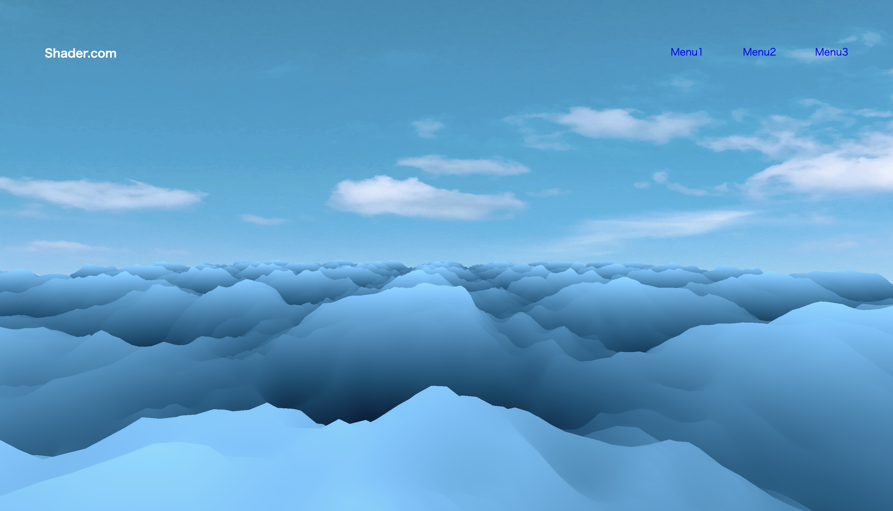

HIYU YAMAUCHI PORTFOLIO
contact
TOP
WEB-WORKS | Sea
Sea

サイト
https://seifu-design.com/web_202212/02_yamauchi/sea/
制作期間
一週間
人数
1人
使用技術
HTML, CSS, JavaScript, Three.js, glsl
作品概要
Three.jsとGLSL言語を使って、海を表現しました。webサイトに、3Dの表現ができたら面白いと思って、UdemyでThree.jsの基礎を学習して作成しました。
こだわり
船に乗っている人の視線を意識して、カメラを上下に揺れたり、複雑な動きをするようにしました。
前の作品を見る
5 / 6
次の作品を見る